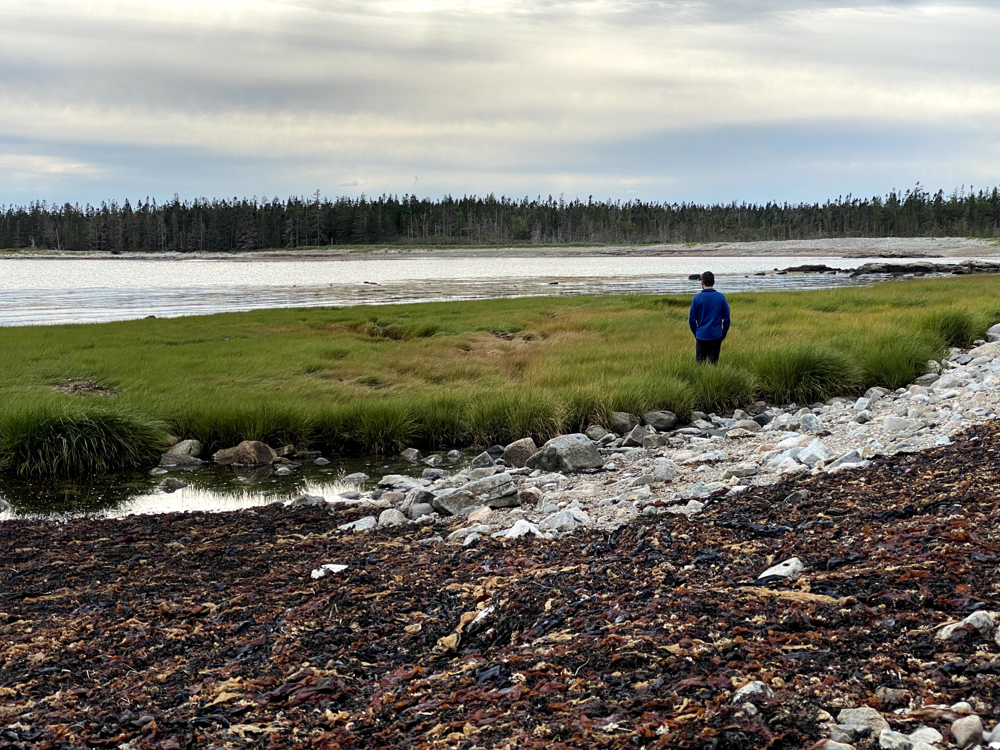
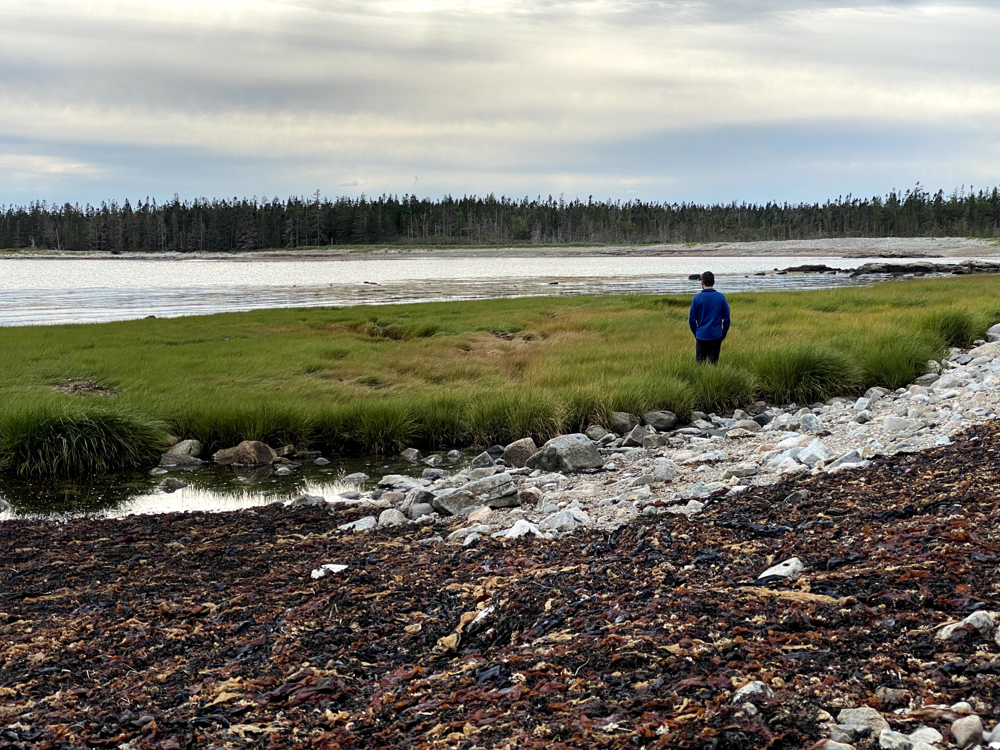

 

I’m a river scientist and water resources engineer working on problems in global hydrology. I’m particularly interested in fluvial transport, hydrologic connectivity, and hydraulic geometry (as revealed through remote sensing, machine learning, and in situ observation). See my research page for more!!
current home: yibs/raymond lab
past homes: fluvial@umass global hydrolab
personal: google scholar orcid github linkedin
contact: craig [dot] brinkerhoff [at] yale [dot] edu